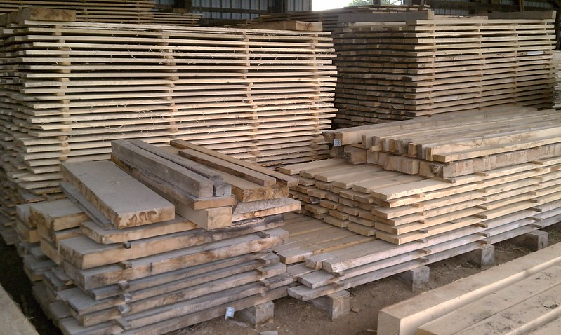

Harvested wood products in the Forest Vegetation Simulator
April 23, 2022
analytics carbon forest carbon forest products harvested wood products
Carbon is stored and sequestered in growing forests. It can also can be stored “off site” in the form of harvested wood products. These can be in short-lived products (i.e., paper or pulp) or long-lived ones (i.e., utility poles).
Harvested wood products in use and solid waste disposal sites (e.g., landfills) represent 4.5% of the total amount of carbon in the US. When using wood products, lower emissions are used compared fossil fuel-intensive materials such as steel and concrete. Substituting the use of wood products as opposed to greenhouse gas-intensive construction materials is an environmentally sound approach with a lower overall carbon footprint.
With the interest in forecasting forest carbon through time, the Forest Vegetation Simulator (FVS) is a commonly used model that also incorporates estimates of carbon stored in harvested wood products. The FVS model was developed by the USDA Forest Service. It is an individual tree model that uses lists of trees (e.g., species and tree diameter) to forecast forest growth through time. The FVS model is an approved growth and yield model in many forest carbon programs, including the California Air Resources Board’s Compliance Offset Program.
Harvested wood products in FVS
The harvested carbon report from FVS simulates carbon in harvested merchantable material. Carbon that is harvested is proportioned into different pools. The amount of carbon stored in a product pool changes over time as wood decays or transitions to another pool. The harvested carbon report tracks carbon stored in four pools:
- Products in use
- Products in solid waste disposal sites (i.e., landfills)
- Carbon emitted from combustion with energy capture (energy)
- Carbon emitted from combustion or decay without energy capture (emissions)
To visualize the harvested wood products report from FVS, I used the Lake States geographic variant to simulate aspen growth starting at a density of 1,000 trees per acre with a site index of 60 feet at 50 years. Aspen was grown to a harvest a rotation of 50 years until a clearcut harvest was specified in the simulation.
After simulating through 50 years, the stand stored 22.5 US tons/acre of carbon in the aboveground live portion of trees. In the clearcut harvest, 16.6 US tons/acre of carbon were removed from the merchantable portion.
The majority of merchantable carbon removed immediately transitioned into harvested wood products in use (11.30 tons/ac). Ten years following the harvest, some of the carbon transitioned into solid waste disposal sites.
| Age (years) | Products | SWDS | Energy | Emissions | Merch Carbon Stored | Merch Carbon Removed |
|---|---|---|---|---|---|---|
| 0 | 0.00 | 0.00 | 0.00 | 0.00 | 0.00 | 0.0 |
| 10 | 0.00 | 0.00 | 0.00 | 0.00 | 0.00 | 0.0 |
| 20 | 0.00 | 0.00 | 0.00 | 0.00 | 0.00 | 0.0 |
| 30 | 0.00 | 0.00 | 0.00 | 0.00 | 0.00 | 0.0 |
| 40 | 0.00 | 0.00 | 0.00 | 0.00 | 0.00 | 0.0 |
| 50 | 11.30 | 0.00 | 2.74 | 2.48 | 11.30 | 16.6 |
| 60 | 6.01 | 1.85 | 4.38 | 4.33 | 7.85 | 16.6 |
| 70 | 4.61 | 2.19 | 4.82 | 4.95 | 6.80 | 16.6 |
| 80 | 4.05 | 2.29 | 4.97 | 5.26 | 6.34 | 16.6 |
| 90 | 3.63 | 2.39 | 5.06 | 5.49 | 6.01 | 16.6 |
The amount of carbon stored in products in use declined through time, while the amount in solid waste disposal sites increased. Ultimately, after 40 years since harvest, approximately half of the merchantable carbon stored remained in products in use or solid waste disposal sites (6.01 US tons/acre), with the other half decayed or burned.

The harvested wood products reports in FVS provide important details about the fate of carbon. The article “Forest carbon estimation using FVS: seven things you need to know” by Hoover and Rebain is a great resource to learn more about estimating carbon with FVS and how to interpret the harvested wood products numbers.
A tool like FVS can be leveraged to better understand the contributions of harvested wood products in understanding the longevity of forest carbon. Not incorporating harvested wood product data in simulations of forest carbon can underestimate the total amount of carbon being stored.
–
By Matt Russell
Email Matt with any questions or comments. Sign up for The Landing for monthly in-depth analysis on data and analytics in the forest products industry.